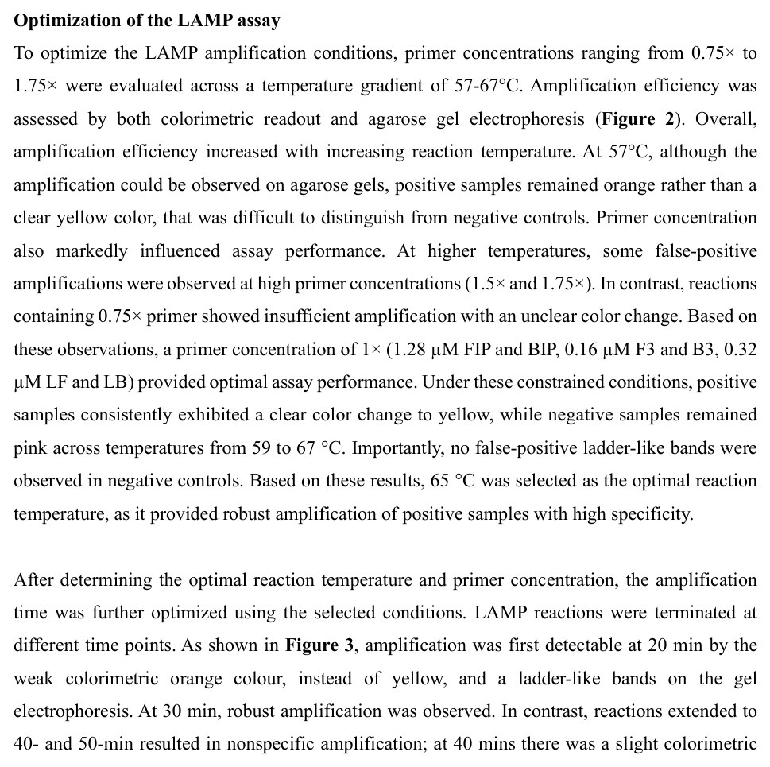
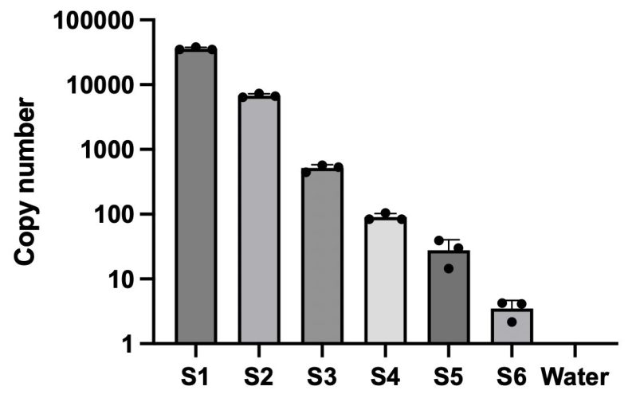
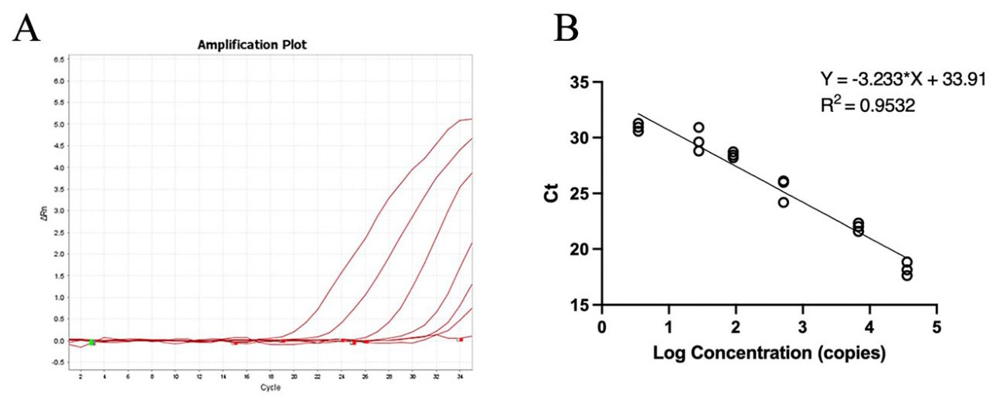
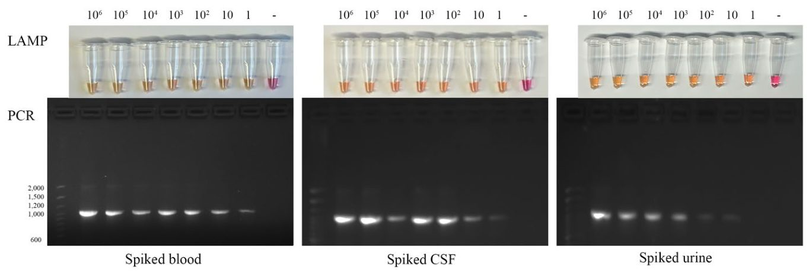
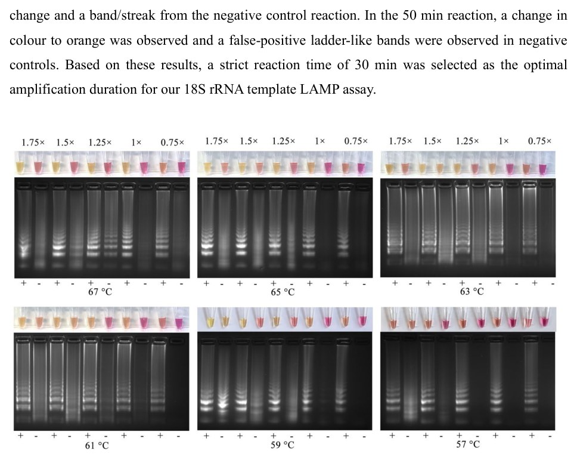
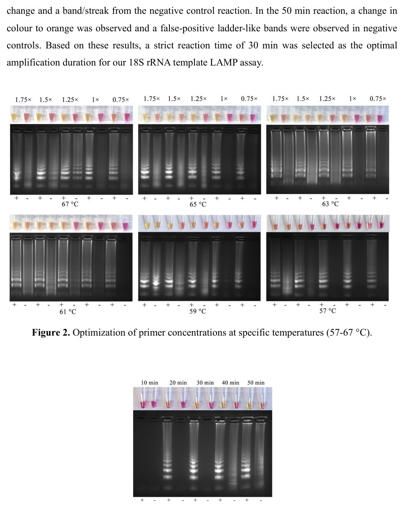
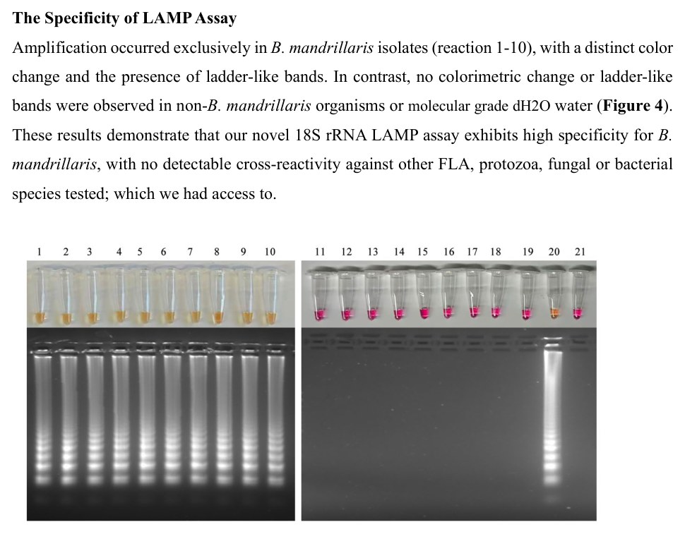
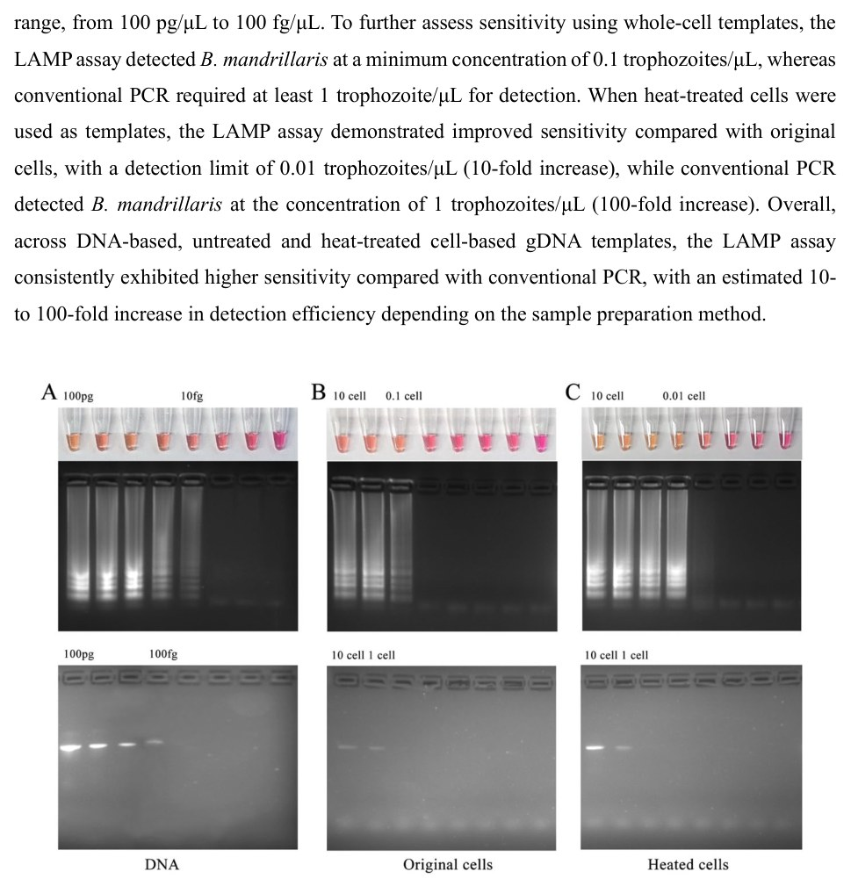
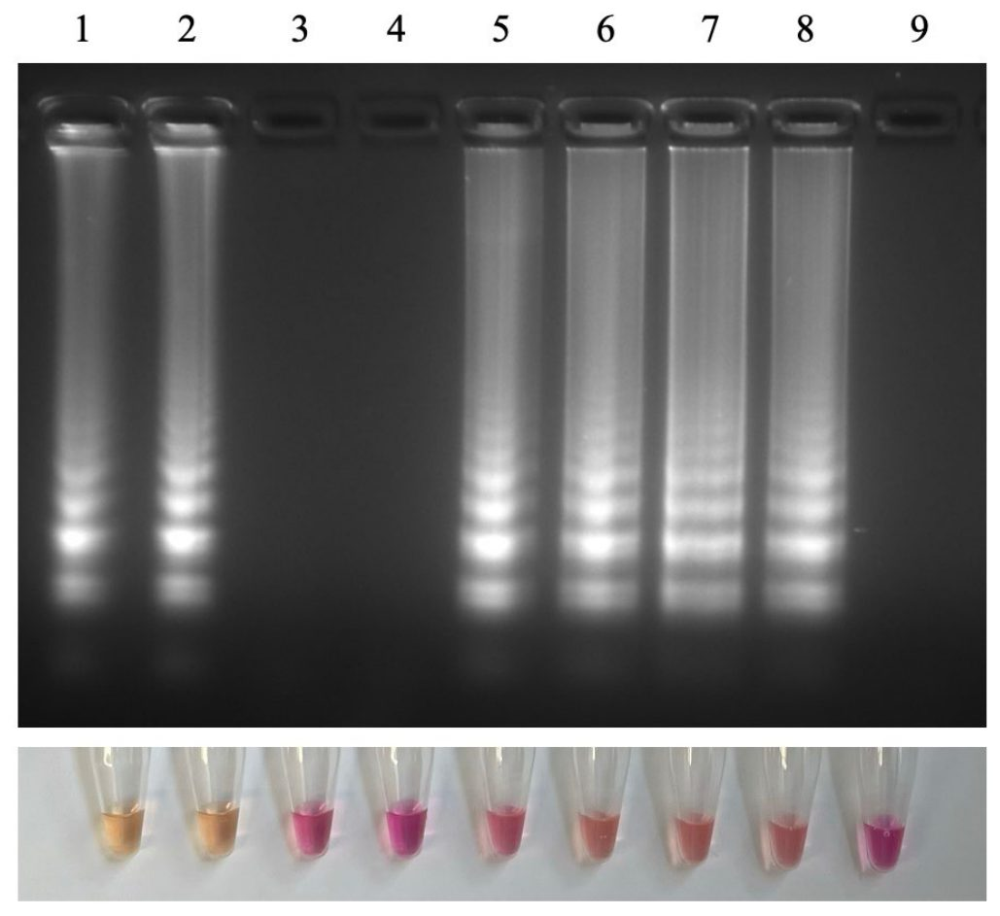

Қауіпті амебаны анықтайтын жаңа жылдам тест әдісі
{kind=link}

Ғалымдар өлімге әкелетін Balamuthia mandrillaris қауіпті амебасын анықтау үшін ілмекті изотермиялық амплификацияға (LAMP) негізделген жылдам әрі сезімтал тест жасады. Бұл әдіс күрделі зертханалық жабдықтарды қажет етпей, қоздырғышты қысқа мерзімде табуға мүмкіндік береді. Тест қан, несеп және жұлын сұйықтығы үлгілеріндегі паразиттің ДНҚ-сын сәтті анықтайды. Енді дәл диагнозды ресурстары шектеулі қарапайым клиникаларда да қоюға болады.
Басты ойлар
- Balamuthia mandrillaris инфекциясын анықтайтын алғашқы LAMP диагностикалық әдісі жасалды.
- Әдістің сезімталдығы стандартты ПЦР-ге қарағанда 10-100 есе жоғары.
- Тест қан, зәр және жұлын сұйықтығы үлгілерінде жоғары тиімділікті сақтайды.
Толығырақ
Balamuthia mandrillaris амебасы өлім көрсеткіші 92%-ға жететін сирек, бірақ өте қауіпті ми қабынуын тудырады. Қолданыстағы диагностика әдістері көп уақытты алады, сезімталдығы төмен және тек мамандандырылған орталықтарда ғана қолжетімді, ал ем нәтижесі үшін диагностика жылдамдығы өте маңызды.
Зерттеушілер фенол қызылы көмегімен көзбен көруге болатын 18S рРНК геніне арналған LAMP тестін әзірледі. Жаңа әдіс B. mandrillaris-тің он түрлі штамында сыннан өтті: тест басқа микроорганизмдермен айқас реакция бермеді және кәсіби ПЦР-мен салыстырғанда 10-100 есе жоғары сезімталдық көрсетті.
Әдіс жұлын сұйықтығы, несеп және қан сияқты күрделі биологиялық орталарда да өз тиімділігін сақтап қалды. Анықтау шегі 10 фг/мкл ДНҚ құрап, qPCR және dPCR әдістері арқылы әр микролитрге шаққанда шамамен 1 көшірме дәлдігі расталды.
Шектеулер
Бұл зерттеу зертханалық әзірлеме мен биологиялық үлгілердегі тексерісті сипаттайды, алайда нақты пациенттермен ауқымды клиникалық сынақтар әлі де жүргізілуі тиіс.
Мақаланың толық талдауы
Түйіндеме
Balamuthia mandrillaris — бэркін өмір сүретін амеба, ол терінің зақымдалуын, жүйелік ауруларды және өлім көрсеткіші шамамен 92% болатын орталық жүйке жүйесінің ауыр, өмірге қауіпті баламутиялық амебтік энцефалит (БАЭ) инфекциясын тудыруы мүмкін. Қазіргі уақытта қолданылатын B. mandrillaris диагностикалық әдістерінің көптеген шектеулері бар, оның ішінде анықтаудың ұзақ уақыты, сезімталдықтың төмендігі және арнайы тесттердің тек жоғары мамандандырылған орталықтарда ғана қолжетімді болуы жатады. Инфекция өте жылдам дамитындықтан, емдеу үшін ерте диагностика өте маңызды. Сондықтан авторлар B. mandrillaris-тің 18S rRNA геніне арналған, фенол қызылы арқылы жалаң көзбен көруге болатын жаңа ілмекті изотермиялық амплификация (LAMP) әдісін жасап шықты, оңтайландырды және бағалады.
Түсіндірме
LAMP әдісі күрделі зертханалық құрылғыларсыз тұрақты температурада ДНК көшірмелерін жылдам жасауға мүмкіндік береді, ал фенол қызылы түстің өзгеруі арқылы нәтижені көзбен көруге көмектеседі.
Бұл жаңа диагностикалық талдау сынақтан өткен басқа еркін өмір сүретін амебалардың, қарапайымдардың, саңырауқұлақтардың немесе бактериялардың ДНК-сымен айқас реакцияға түспей, он түрлі B. mandrillaris изолятын анықтай алады. Дәстүрлі ПТР-мен салыстырғанда, біздің LAMP талдауымыз бөлініп алынған ДНК, жылумен өңделген үлгілер және өңделмеген үлгілер үшін шамамен 10–100 есе жоғары сезімталдық көрсетті. Анықтау шегі (LOD) сәйкесінше 10 фг/мкл ДНК, өңделмеген жасушалар үшін 10 трофозоит/100 мкл және жылумен өңделген жасушалар үшін 1 трофозоит/100 мкл құрады. Бұл әдіс 1 көшірме/мкл шамасындағы LOD мәнін анықтау үшін жаңадан әзірленген екі qPCR және dPCR әдістері арқылы қосымша тексеруден өтті.
Маңызды
Жаңа LAMP әдісі айқас реакцияларсыз 10 изоляцияны анықтайды, стандартты ПТР-ден 10–100 есе асып түседі және 1 трофозоит/100 мкл дейінгі мөлшерді көре алады.
Сонымен қатар, бұл әдіс күрделі биологиялық орталарға төзімді: LAMP жұлын сұйықтығында, зәрде және қанмен байытылған үлгілерде өзінің тиімділігін сақтап қалды. Әзірленген LAMP әдісінің қарапайымдылығы, беріктігі мен жоғары сезімталдығының арқасында ол B. mandrillaris-ті жылдам клиникалық анықтау және диагностикалау үшін, әсіресе мамандандырылмаған орталықтарда және ресурстары шектеулі аймақтарда пайдалы болады. Авторлар B. mandrillaris үшін алғашқы LAMP диагностикалық әдісін ұсынады; бұл жұмыс 2025 жылдың 4 қарашасы, сейсенбі күні Мексиканың Пуэрто-Морелос қаласында өткен Еркін өмір сүретін амебалардың биологиясы мен патогендігі бойынша 20-ші Халықаралық жиында (FLAM 2025) жарияланды.
Кіріспе
Клиникалық диагноз қою қиындықтары және инфекцияның ағым ерекшеліктері
Еркін өмір сүретін B. mandrillaris амебасы адамдар мен жануарларда орталық жүйке жүйесінің сирек кездесетін, бірақ дерлік әрқашан өліммен аяқталатын баламутиялық амебтік энцефалит (BAE) ауруын тудырады. BAE диагнозын клиникалық тұрғыдан анықтау өте күрделі болып қала береді, өйткені бастапқы белгілері көбінесе байқалмайды немесе арнайы емес, соның салдарынан ауруды жиі ісіктермен, абсцесспен, басқа да қабыну сипатындағы неврологиялық патологиялармен немесе жиі кездесетін менингит қоздырғыштарымен шатастырады. Бастапқы клиникалық сатыда кәсіби диагностикалық әдістерге компьютерлік және магниттік-резонанстық томография сияқты нейровизуализация әдістері мен гистологиялық зерттеу кіреді. BAE үшін арнайы маркерлердің жоқтығы жиі қате диагноз қоюға әкеліп соғады және көптеген жағдайлар тек қайтыс болғаннан кейін ғана анықталады. Иммуногистохимиялық бояу мен иммунофлуоресценциялық талдаулар диагноз қою үшін қажет, бірақ бұл сынақтар арнайы антиденелерді талап етеді және тек кейбір зертханалар мен ғылыми орталықтарда ғана қолжетімді. Қытай мен Перу сияқты кейбір географиялық аймақтарда BAE науқастарының көбісі орталық жүйке жүйесі зақымданғанға дейін тері зақымдануларымен жүгінеді, бұл клиникалық тұрғыдан ертерек тану мен араласу арқасында айтарлықтай жоғары өмір сүру көрсеткіштерін қамтамасыз етеді және бұл науқастарда ерте диагноз қоюдың маңыздылығын көрсетеді. АҚШ-та біз әдетте науқастардың тері зақымдануынсыз тек BAE ауруымен келгенін көреміз. Әр түрлі географиялық генотиптер немесе штамдар әр түрлі Leishmania түрлеріне ұқсас өзіндік патобиологиялық механизмдерге ие деп болжанады.
Маңызды
B. mandrillaris тудыратын баламутиялық амебтік энцефалитті (BAE) симптомдардың арнайы еместігіне байланысты ерте сатыда диагностикалау өте қиын, алайда кейбір аймақтарда тері зақымдануларының болуы емді уақытында бастауға және өмір сүру көрсеткішін арттыруға мүмкіндік береді.
Молекулярлық тәсілдер және қолданыстағы әдістердің шектеулері
Молекулярлық диагностика әдістері жоғары спецификалыққа ие, бүгінгі таңда жекеленген ПТР негізіндегі талдаулар әзірленген. Бұл молекулярлық тәсілдер клиникалық үлгілерде де, қоршаған орта үлгілерінде де жоғары специфика мен сезімталдықты көрсете отырып, өз тиімділігін дәлелдеді. Дегенмен, бұл сынақтар гипотезаға негізделген және әдетте клиникалық белгілер негізінде B. mandrillaris инфекциясы күдіктенген жағдайларда қолданылады. Келесі буын секвенирлеу (NGS) технологиясы белгісіз қоздырғыштарды анықтау үшін тамаша әдіс болып табылады. Бұл жоғары өткізу қабілеттілігі бар, бейтарап диагностикалық әдіс мыңдаған микроорганизмдерді анықтай алады, бұл оны B. mandrillaris немесе басқа да еркін өмір сүретін амебалар сияқты сирек немесе күтпеген қоздырғыштарды анықтауда ерекше пайдалы етеді. NGS техникасына әрқашан қоздырғыштың төмен мөлшері мен иесінің нуклеин қышқылдарының фоны әсер етеді, әсіресе B. mandrillaris жағдайларында, жұлын сұйықтығы жиі тексерілгенімен, онда қоздырғыш мөлшері аз немесе мүлдем жоқ болады, сондықтан растау үшін қайталама үлгі алу және секвенирлеу қажет. NGS негізіндегі диагностика бастапқы диагноз сәтсіз болған жағдайда қолданылғанымен, бастапқы нәтижелерді алу үшін әдетте бірнеше күн кетеді; сонымен қатар оның қымбаттығы мен құрал-жабдықтарды басқарудың техникалық күрделілігі оның бірінші қатардағы диагностикалық әдіс ретінде кеңінен қолданылуын шектейді.
Түсіндірме
Келесі буын секвенирлеу (NGS) — бұл үлгіде қандай қоздырғыш бар екенін алдын ала білмей-ақ, миллиондаған ДНК фрагменттерін бір мезгілде талдап, кез келген микробтық тізбектерді анықтауға мүмкіндік беретін жоғары өнімді генетикалық зерттеу әдісі.
Ілмекті изотермиялық амплификация
Ілмекті изотермиялық амплификация (LAMP) алғаш рет 2000 жылы сипатталған, ол жылдам, сезімтал және жоғары спецификалық нуклеин қышқылдарын амплификациялау техникасы болып табылады. Стандартты LAMP талдауы екі сыртқы праймерді, екі ішкі праймерді және екі ілмекті праймерді қоса алғанда, алты праймер жиынтығын қамтиды. Амплификация изотермиялық жағдайларда жүреді, сондықтан оны су моншасы немесе қыздырғыш блок сияқты қарапайым жабдықтардың көмегімен орындауға болады, ал нәтижелерін электрофорезді немесе күрделі визуализация құралдарын қажет етпей-ақ, жалаңаш көзбен түс өзгеруі арқылы тікелей көруге болады. Дәстүрлі ПТР-мен салыстырғанда, LAMP әдісі ПТР-ден 10-нан 100 есеге дейін асатын аналитикалық сезімталдықты көрсетеді. Жабдықтарға қойылатын талаптардың аздығы және жұмыс процесінің жеңілдетілгені операциялық шығындарды төмендетеді және LAMP әдісін бастапқы медициналық көмек мекемелерінде, шалғай өңірлерде және далалық эпидемиологиялық зерттеулерде қолдануға қолайлы етеді. LAMP әдісі басқа еркін өмір сүретін амебаларды анықтау үшін бұрыннан қолданылған; мысалы, зерттеушілер N. fowleri вируленттілік геніне бағытталған LAMP талдауын және Acanthamoeba 18S rRNA геніне бағытталған екі LAMP талдауын әзірлеген. Дегенмен, B. mandrillaris үшін арнайы әзірленген немесе жарияланған ешқандай LAMP талдауы бұрын болмаған.
Маңызды
LAMP әдісі күрделі құралдарсыз жылдам, жоғары сезімтал және спецификалық изотермиялық амплификацияны қамтамасыз етеді, алайда осы уақытқа дейін B. mandrillaris анықтауға арналған арнайы LAMP тесттері жасалмаған еді.
Қазіргі зерттеудің мақсаттары мен дизайны
Осыған байланысты, B. mandrillaris үшін сенімді және берік LAMP диагностикалық талдауын әзірлеу ерте анықтауды жақсартуға және өлім-жітім көрсеткіштерін әлеуетті түрде төмендетуге мүмкіндік береді. Сонымен қатар, бұл талдау географиялық таралуын түсіну, әсер ету қаупі жоғары халықты немесе аймақтарды анықтау және адамдардың науқастануынан қорғау үшін болашақ қоғамдық денсаулық сақтау саясатын қолдау мақсатында қоршаған ортаны бақылау үшін қолданылуы мүмкін. Осы зерттеуде біз B. mandrillaris үшін 18S rRNA геніне бағытталған жылдам, спецификалық және сезімтал LAMP диагностикалық талдауын әзірлеуді және растауды, сондай-ақ оның спецификалығын, сезімталдығын және зертханалық және клиникалық маңызы бар үлгілердегі тиімділігін жүйелі түрде бағалауды мақсат етіп қойдық.
Абайлаңыз
Авторлар далалық жағдайда мониторинг жасау әдістерін әзірлеу қажеттігін атап көрсетеді, алайда зертханалық тесттерді нақты клиникалық тәжірибеге енгізу әрқашан пациенттердің өкілдік таңдаулары негізінде ауқымды клиникалық валидацияны талап етеді.
Нәтижелер
Праймерлерді жобалау
B. mandrillaris 18S рРНҚ генін нысанаға алу және көбейту үшін (GenBank AF477019-AF477022, AF019071, JX524850) LAMP арнайы праймерлері жобаланды. Бастапқы кезеңде зерттеушілер таңдалған тізбектердегі сақталған аймақтарды анықтау үшін Multalin бағдарламасында салыстырмалы талдау жүргізді. Алынған нәтижелер негізінде PrimerExplorer V5 құралы көмегімен екі ішкі (FIP және BIP) және екі сыртқы (F3 және B3) праймер жиынтықтары жасалды. Алдын ала іріктеуден кейін таңдалған ішкі және сыртқы праймерлерге сүйене отырып, екі ілмекті праймер (LF және LB) қосылды. Барлық үміткер праймерлердің тізбек ерекшелігі NCBI базасы арқылы BLAST талдауы көмегімен тексерілді, ал олардың тұрақтылығы, екінші ретті құрылымдарды түзу бейімділігі мен димеризациясы OligoAnalyzer көмегімен бағаланды. Праймерлердің тізбектері мен орналасуы 1-кесте мен 1-суретте көрсетілген.
Түсіндірме
LAMP (ілмекті изотермиялық амплификация) әдісі күрделі термоциклер құрылғыларынсыз, тұрақты температурада ДНҚ-ны жылдам әрі жоғары дәлдікпен көбейтуге мүмкіндік береді.
LAMP талдауын оңтайландыру
Амплификация шарттарын баптау үшін праймерлердің концентрациясы 0.75× пен 1.75× аралығында және температура градиенті 57–67 °C шегінде сынақтан өткізілді. Реакция тиімділігі түс өзгеруі және агароза гельдік электрофорезі арқылы бағаланды (2-сурет). Жалпы алғанда, реакция тиімділігі температураның жоғарылауымен артты. 57 °C кезінде гельден өнімдерді көруге болғанымен, оң үлгілердің түсі таза сарының орнына қызғылт сары болып қалып, теріс бақылаудан ажырату қиындады. Праймер концентрациясы да нәтижеге айтарлықтай әсер етті: жоғары температурада жоғары концентрациялы (1.5× және 1.75×) үлгілерде жалған оң нәтижелер байқалды, ал 0.75× концентрация анық емес түс өзгеруімен әлсіз амплификация көрсетті. Осы бақылауларға сүйене отырып, 1.28 µM FIP пен BIP, 0.16 µM F3 пен B3, сондай-ақ 0.32 µM LF пен LB тұратын 1× концентрация оңтайлы деп танылды. Бұл жағдайда 59–67 °C аралығында оң үлгілер анық сары түске енді, ал теріс үлгілер қызғылт болып қалды және жалған оң баспалдақ тәрізді жолақтар байқалмады. 65 °C оңтайлы реакция температурасы ретінде таңдалды.
Оңтайлы температура мен праймер концентрациясы анықталғаннан кейін, амплификация уақыты зерттелді. Реакциялар әртүрлі уақыт аралығында тоқтатылды. 3-суретте көрсетілгендей, амплификация алғаш рет 20-минутта әлсіз қызғылт сары түс пен гельдегі жолақтар арқылы байқалды. 30-минутта сенімді амплификация тіркелді. Керісінше, 40 және 50 минутқа созылған реакциялар арнайы емес көбеюге әкелді: 40-минутта түс сәл өзгеріп, теріс бақылауда жолақ пайда болды, ал 50-минутта түс қызғылт сарыға ауысып, теріс бақылауларда жалған оң баспалдақ тәрізді жолақтар анықталды. Осылайша, 30 минуттық қатаң уақыт оңтайлы ұзақтық ретінде бекітілді.
Маңызды
18S рРНҚ геніне арналған LAMP талдауының оңтайлы шарттары ретінде 65 °C температура, 1× праймер концентрациясы және дәл 30 минуттық уақыт анықталып, олар жоғары дәлдіктегі нәтижені қамтамасыз етті.
LAMP талдауының ерекшелігі
Амплификация тек B. mandrillaris изоляттарында (1-10 реакциялар) ғана жүзеге асып, түстің айқын өзгеруімен және гель электрофорезінде баспалдақ тәрізді жолақтардың пайда болуымен қатар жүрді. Керісінше, B. mandrillaris қатысы жоқ басқа ағзаларда немесе тазартылған dH2O су үлгілерінде ешқандай түс өзгеруі немесе арнайы жолақтар байқалмады (4-сурет). Бұл нәтижелер жаңадан жасалған 18S рРНҚ LAMP талдауының басқа еркін өмір сүретін амебаларға, қарапайымдыларға, саңырауқұлақтар мен бактерияларға қарсы айқас реактивтілік көрсетпейтінін және жоғары ерекшелікке ие екенін дәлелдейді.
LAMP талдауының сезімталдығы
Оңтайландырылған LAMP талдауының сезімталдығы бағаланып, түрлі B. mandrillaris гДНҚ матрицалары арқылы кәдімgi ПТР-мен тікелей салыстырылды (5-сурет). ДНҚ негізіндегі талдауда LAMP әдісі B. mandrillaris ДНҚ-сын 100 pg/μL-ден 10 fg/μL-ге дейінгі диапазонда сәтті анықтады. Кәдімгі ПТР тарырақ дәлізде — 100 pg/μL-ден 100 fg/μL-ге дейін жұмыс істеді. Бүтін жасушалы үлгілерді пайдаланған кезде LAMP ең аз 0.1 трофозоит/μL концентрацияны анықтаса, кәдімгі ПТР кемінде 1 трофозоит/μL қажет етті. Термиялық өңдеуден өткен жасушаларды қолданғанда LAMP сезімталдығы 10 есе артып, 0.01 трофозоит/μL шегіне жетті, ал кәдімгі ПТР 1 трофозоит/μL деңгейінде анықтады (100 есе айырмашылық). Жалпы алғанда, матрица түрлері бойынша LAMP әдісі кәдімгі ПТР-ге қарағанда 10-нан 100 есеге дейін жоғары сезімталдық көрсетті.
Абайлаңыз
Сезімталдықты бағалау зертханалық жағдайда жасанды үлгілерде жүргізілді, сондықтан әдісті нақты клиникалық материалдарда қолдану үшін қосымша зерттеулер қажет.
LAMP диагностикалық әдісінің көшірмелер санын анықтау валидациясы
LAMP әдісінің сенімділігін тексеру және анықтау шектерін нақтылау үшін зерттеушілер цифрлық ПЦР (dPCR) және сандық ПЦР (qPCR) әдістерін қолданды. dPCR нәтижелері 10 еселік қатарлы сұйылту кезінде концентрацияға байланысты көшірмелер санының анық төмендегенін көрсетті (Сурет 6). Әр үлгіде оң және теріс бөліктер айқын ажыратылды, ал теріс бақылауда ешқандай амплификация байқалмады.
{kind=link}

Түсіндірме
dPCR немесе цифрлық ПЦР — бұл стандартты қисықтарды қажет етпей, үлгіні мыңдаған микротамшыларға бөліп ДНК молекулаларын аса жоғары дәлдікпен санау әдісі.
Калибрлеу үшін белгілі көшірмелері бар 18S rRNA плазмидті стандарттары қолданылды. Мәліметтер Ct мәндері мен плазмида көшірмелері логарифмі арасында берік сызықтық байланыс бар екенін көрсетті (Сурет 7). Стандартты қисық теңдеуі Y = -3.233x + 33.91, R2 = 0.9532 болды.
{kind=link}

Маңызды
LAMP талдауының аналитикалық анықтау шегі (LOD) шамамен 1 көшірме/мкл құрады, ал qPCR (1.07 × 10^5 көшірме/мкл) және dPCR (1.13 × 10^5 көшірме/мкл) нәтижелері сандық бағалаудың жоғары дәлдігін растады.
Сонымен қатар, qPCR мен dPCR арасындағы сәйкестікті бағалау үшін gDNA пайдаланылды. B. mandrillaris gDNA үлгілері 1 нг/мкл концентрацияда тексеріліп, qPCR үшін 1.07 × 10^5 көшірме/мкл және dPCR үшін 1.13 × 10^5 көшірме/мкл көрсетті. LAMP анықтай алатын ең төменгі ДНК концентрациясы негізінде әдістің LOD мәні шамамен 1 көшірме/мкл деп анықталды.
Адамның биологиялық сұйықтық үлгілерінде диагностикалық әлеуетті валидациялау
Биологиялық сұйықтықтар диагностикаға кедергі келтіруі мүмкін болғандықтан, авторлар жаңа құралды сынақтан өткізді. Индиана университетінің медицина мектебінен алынған жưngин сұйықтығының (ликвор), зәрдің және қанның клиникалық үлгілері қолданылды. Әр реакция үшін 1-ден 10^6-ға дейін B. mandrillaris трофозоиттері қосылып, стандартты сұйылту жасалды.
Абайлаңыз
Эксперименттер жасанды түрде қоздырғыш қосылған клиникалық үлгілерде жүргізілді, сондықтан нақты науқастармен ауқымды сынақтар қажет.
LAMP диагностикалық құралы барлық тексерілген биологиялық үлгілерде небәрі 1 трофозоитті сәтті анықтады (теріс бақылаудан басқа барлық жағдайда сары түс байқалды). Салыстыру үшін, қарапайым ПЦР зәр үлгілерінде кем дегенде трофозоиттерді қажет етіп, үш сағатты алса, біздің LAMP құралы небәрі 30 минутта нәтиже берді (Сурет 8).
{kind=link}

Маңызды
LAMP әдісі ликвор, зәр және қан ортасында ингибирленбей жұмыс істеп, классикалық ПЦР-дан жылдамдық (30 минут пен 3 сағат) және визуалды айқындық бойынша басым түсті.
Алынған нәтижелер адамның негізгі биологиялық орталары LAMP амплификациясына кедергі жасамайтынын дәлелдейді. Тест дәстүрлі ПЦР-мен салыстырғанда сенімді және жоғары тиімділік көрсетті.
Талқылау
B. mandrillaris диагностикасына арналған LAMP әдісін әзірлеу және оңтайландыру
B. mandrillaris инфекциясы орталық жүйке жүйесіне өткенде өте тез дамиды, симптомдар басталғаннан өлімге дейін бірнеше аптадан айға дейін уақыт өтуі мүмкін. Аурудың сирек кездесуі мен симптомдардың айқын еместігі диагнозды кешіктіреді. Дәстүрлі ПТР әдістері (16S rRNA, 18S rRNA немесе RNase P гендеріне бағытталған) әртүрлі дәлдікке ие, ал NGS қымбат және арнайы дайындықты талап етеді. Біз әзірлеген ілмекті изотермиялық амплификация (LAMP) әдісі арзан, жылдам және жоғары сезімтал диагностикалық құрал болып табылады.
Маңызды
LAMP әдісі 65 °C температурада 30 минут ішінде жылдам амплификацияны қамтамасыз етеді және басқа амебалармен, саңырауқұлақтармен немесе бактериялармен айқаспалы реакцияға түспейді.
Праймерлерді жобалауда 18S rRNA гені таңдап алынды, себебі 16S rRNA нысанаға алу қате оң нәтижелер берді. Оңтайландыру барысында температура, реакция уақыты және праймерлер концентрациясы (FIP/BIP үшін 1,28 мкМ, F3/B3 үшін 0,16 мкМ, LF/LB үшін 0,32 мкМ) анықталды. Бақылау үлгілері арқылы сенімсіз сигналдар азайтылды.
Үлгілерді дайындау және аналитикалық тиімділік
LAMP-тің негізгі артықшылығы — оның шикі үлгілерге төзімділігі. Біз коммерциялық жиынтықтарды, қыздыру әдісін және тікелей үлгілерді салыстырдық. Нәтижелер LAMP-тің тіпті өңделмеген үлгілерде де патогенді анықтай алатынын көрсетті. Дәстүрлі ПТР-мен салыстырғанда, біздің LAMP әдісіміз 10–100 есе жоғары тиімділікке ие.
Түсіндірме
LAMP — бұл тұрақты температурада ДНҚ-ны көбейту әдісі, ол қарапайым ПТР-ға қарағанда жылдам әрі қарапайым.
Біз алғаш рет dPCR (сандық ПТР) көмегімен 18S rRNA көшірмелерінің санын және анықтау шегін (LOD) белгілеп алдық.
Шектеулер және нәтижелерді түсіндіру
LAMP әдісінде өнімнің көптігіне байланысты ластану қаупі бар. Фенол қызылы арқылы нәтижені көзбен көруге болады, бұл пробиркаларды ашпауға мүмкіндік береді. Алайда, түсініксіз түс өзгерістерінде (қызғылт сары түс) электрофорез талап етілуі мүмкін. Сондықтан, LAMP алғашқы жедел диагностикалық құрал болып табылады.
Абайлаңыз
Визуалды түсіндіру жарық жағдайына байланысты болуы мүмкін, сондықтан күмәнді нәтижелерді басқа әдістермен растау қажет.
Қорытынды
Диагностикалық әдістерді әзірлеу және валидациялау қорытындысы
Бұл зерттеуде B. mandrillaris қоздырғышын анықтаудың үш жаңа әдісі: LAMP (ілмекті изотермиялық амплификация), qPCR және dPCR әзірленіп, валидациядан өтті. Жұмыс барысында праймерлер, олардың концентрациясы және реакция шарттары оңтайландырылды. Авторлар әдістердің сезімталдығы мен спецификалылығын анықтап, ДНҚ көшірмелерінің санын сандық бағалау әдістемесін пысықтады. Әдістер адамның биологиялық сұйықтықтарының үлгілерінде (spiked samples) тексерілді.
Маңызды
LAMP әдісі жоғары сезімталдық, спецификалылық және тұрақтылық көрсетті, бұл оны клиникалық тәжірибеде Balamuthia mandrillaris-ті ерте диагностикалау үшін болашағы зор құрал етеді.
Алынған нәтижелер LAMP әдісін алғашқы медициналық көмек көрсету мекемелерінде немесе ресурстары шектеулі аймақтарда қолдануға өте қолайлы екенін көрсетеді. Қоздырғышты ерте анықтау емдеуді уақтылы бастауға мүмкіндік береді, бұл өз кезегінде науқастардың жағдайын жақсартып, Balamuthia тудыратын аурулармен, әсіресе BAE-мен байланысты өте жоғары өлім-жітім көрсеткішін төмендетуге көмектеседі.
Түсіндірме
LAMP — бұл ДНҚ-ны тұрақты температурада тез көбейтуге мүмкіндік беретін молекулалық диагностика әдісі, ол күрделі зертханалық жабдықтарды қажет етпейді.
Әдістер
Амебаларды өсіру
Зерттеу барысында B. mandrillaris изоляттары пайдаланылды: V039, ITSON (Мексикадағы ITSON университетінің докторы Луис Фернандо Ларес-Хименес сыйға тартқан), SAM, RP5, OK1 (АҚШ Калифорния қоғамдық денсаулық сақтау департаментінің докторы Тельма Х. Даннебаке сыйға тартқан), V433, V188, V194, V426 және V619 (АҚШ NIH бағдарламасы қолдайтын BEI resources қорынан тапсырыспен алынған). Сондай-ақ Америкалық типтік культуралар жинағынан (ATCC) басқа еркін тіршілік ететін амебалар қолданылды: Naegleria fowleri Nf69 штамы (ATCC 30215) және Acanthamoeba castellanii T4 генотипі (ATCC 50370). B. mandrillaris культуралары 37℃ температурада және 5% CO₂ ортасында, 10% эмбрионалдық бұқа сарысуы (FBS) және 125 мкг пенициллин-стрептомицин (125 мкг / 5000 Әр/мл пенициллин және 5 мг/мл стрептомицин) қосылған Balamuthia mandrillaris ITSON ортасында (BMI) ұсталды. Жұмыс желдетілетін 75 cm² тіндік культура колбаларында жүргізілді. N. fowleri желдетілмейтін 75 cm² колбаларда, 34℃ температурада, 10% FBS пен pen-strep қосылған толық Нельсон ортасында (NCM) өсірілді; ал A. castellanii протеаза пептон-глюкоза ортасында (PG) 27℃ температурада, pen-strep қосылып, ұқсас желдетілмейтін 75 cm² колбаларда өсірілді.
Түсіндірме
> Жасушаларды пассаждау — жасушалардың тығыздығы шамадан тыс артып, өліп қалмауы үшін оларды жаңа қоректік ортаға көшіріп отыру үдерісі.
Кәдуілгі субкультивациялау әр 3–4 күн сайын жасушалар 80-90% қабатқа жеткен кезде жасалды. Жасушаларды бөліп алу үшін B. mandrillaris бар колбаларға 5 мл 0.25% трипсин-ЭДТА (1X) қосылып, пластиктен ажырату үшін 37℃ температурада 5 минут инкубацияланды. N. fowleri колбалары 15 минут бойы мұзға қойылды, ал A. castellanii жасушалары механикалық түрде жинап алынды. Жасушалар 50 мл центрифуга түтігіне жиналып, 4℃ температурада 3,214 × g (3,900 айн/мин) жылдамдықпен центрифугаланды. Содан кейін жасушалар саналып, қажетті концентрацияға дейін сұйылтылды және өсуін жалғастыру үшін қайта егілді.
Үлгіні дайындау
Sarcocystis neurona үлгісін Пердю университетінің докторы Сривени Дангудубиям берді; Toxoplasma gondii үлгісін сол университеттен доктор Кристоф Конрадт ұсынды; ал Candida auris пен C. albicans үлгілерін Пердю университетінің докторы Шанкар Тангамани берді. Escherichia coli (ATCC 8739), Serratia marcescens (ATCC 13048) және Pseudomonas aeruginosa (ATCC 9027) бактериялары тікелей ATCC-дан сатып алынды.
Түсіндірме
> gДНК (геномдық ДНК) — бұл ағзаның барлық тұқым қуалайтын ақпаратын қамтитын молекула, оны генетикалық талдаулар жүргізу үшін жасушалардан бөліп алады.
Барлық ағзалардан геномдық ДНК өндірушінің нұсқауына сәйкес коммерциялық ДНК экстракция жиынтығы арқылы бөлініп алынды. Әрбір ДНК үлгісі 2× 10⁶ жасушадан экстракцияланды. V039 B. mandrillaris изоляты үшін тазартылған геномдық ДНК молекулалық тазалықтағы нуклеазасыз суда (dH₂O) 0.1 фг/мкл-ден 100 пг/мкл-ге дейінгі диапазонда қатарынан сұйылтылды. Сондай-ақ қосымша зерттеулер үшін термиялық өңдеуден өткен және бастапқы (өңделмеген) B. mandrillaris трофозоиттері дайындалды. Жасуша тұнбасы саналып, нуклеазасыз суда соңғы мөлшері 10 000 трофозоит/мл болғанша сұйылтылды және 6 рет 10 еселік қатарлы сұйылту жасалды. B. mandrillaris 95℃ температурада 1 сағат бойы қыздырылды, ал бастапқы жасушалар ешқандай қосымша өңдеусіз тікелей gДНК экстракциясына қолданылды.
Талдауды оңтайландыру
LAMP жағдайларын оңтайландыру WarmStart® Colorimetric LAMP 2X Master Mix хаттамасына сай жүзеге асырылды. Барлық праймерлерді Integrated DNA Technologies компаниясы синтездеді. Негізгі реакция жүйесі 2X WarmStart Colorimetric Master Mix, праймерлер жиынтығы (сыртқы, ішкі және ілмекті праймерлердің қатынасы 1:4:2 болды), gДНК немесе dH₂O матрицасы және dH₂O тұрды. Негізgi инкубация уақыты 65℃ температурада 30 минут етіп белгіленді. Оңтайландыру кезінде таңдалған праймерлер жиынтығы оң үлгілермен (B. mandrillaris gДНК) және теріс бақылаулармен (dH₂O) әртүрлі жағдайларда сынақтан өткізілді: (i) 0.75X, 1X, 1.25X, 1.5X және 1.75X болатын әр түрлі праймер концентрацияларында; (ii) 57℃, 59℃, 61℃, 63℃, 65℃ және 67℃ болатын әр түрлі температураларда.
Амплификация нәтижелері ерітінді түсінің өзгеруін визуалды бағалау және 1.5% агарозды гель электрофорезі арқылы тексерілді. Оңтайлы жағдайлар деп оң үлгілерде анық қызғылт-сары түске ауысуды (теріс нәтижеден оң нәтижеге өту) және LAMP амплификациясына тән сатылы өрнектерді көрсететін, ал теріс бақылауда ешқандай өнім байқалмайтын жағдайлар аталды. Праймер концентрациясы мен температурасын таңдап болғаннан кейін, ең аз және оңтайлы реакция уақытын анықтау үшін әр түрлі уақыт аралықтарындағы (10, 20, 30, 40 және 50 минут) амплификация тиімділігі өзара салыстырылды.
LAMP ерекшелігі мен сезімталдығын анықтау
LAMP әдісінің ерекшелігі B. mandrillaris-тің он түрлі изолятын (V039, SAM, RP5, OK1, ITSON, V433, V188, V194, V426 және V619) тексеру арқылы бағаланды. Сондай-ақ, басқа еркін өмір сүретін амебалар (A. castellanii, N. fowleri), қарапайымдар (S. neurona, T. gondii), саңырауқұлақтар (C. auris, C. albicans) және бактериялар (E. coli, S. marcescens, P. aeruginosa) гДНҚ-сы тексерілді. Амплификация өнімдері түс өзгеруі және 1,5% агарозды гель электрофорезі арқылы талданды.
LAMP сезімталдығын бағалау үшін анықтау шегі (LOD) дәстүрлі ПТР әдісімен салыстырылды. B. mandrillaris гДНҚ-сының 10 еселік сериялық сұйылтылған үлгілері (0,1 фг/мкл-ден 100 пг/мкл-ге дейін) және стандартты жасушалар (1000-нан 0,001 трофозоитке дейін) дайындалды. Әр үлгі үшін (n=3) LAMP және ПТР қатар жүргізілді. LOD ретінде оң нәтиже беретін ең төменгі концентрация белгіленді. Дәстүрлі ПТР үшін Bal18SF3-Fwd және Bal18SB3-Rev праймерлері қолданылды: 94°C-та 5 минут бастапқы денатурация, содан кейін 40 цикл (94°C — 1 минут, 54°C — 2 минут, 72°C — 3 минут) және 72°C-та 10 минуттық соңғы ұзарту.
Түсіндірме
LAMP (Loop-mediated isothermal amplification) — бұл ДНҚ-ны тұрақты температурада тез көбейту әдісі, ал LOD — әдіс анықтай алатын ДНҚ-ның ең аз мөлшері.
Мақсатты генді клондау және трансформация
Мақсатты ген LAMP праймерлерінің көмегімен B. mandrillaris гДНҚ-сынан амплификацияланды. ПТР өнімдері 1% агарозды гельден тазартылып, pGEM®-T Easy векторына T4 лигаза арқылы жалғанды. Конструкция J109 E. coli жасушаларына енгізілді. Трансформанттар ампициллин, IPTG және X-Gal қосылған LB агарында өсіріліп, көк-ақ скрининг арқылы таңдалды. Оң колониялар SOC ортасында көбейтіліп, плазмидті ДНҚ бөлініп алынды. Инсерттің дұрыстығы секвенирлеу арқылы расталды, концентрация NanoDrop спектрофотометрімен өлшенді.
qPCR және dPCR валидация талдауын әзірлеу
qPCR үшін LAMP праймерлері және стандарт ретінде рекомбинантты плазмидалар қолданылды. Реакция қоспасы SYBR Green Master Mix, F3/B3 праймерлері (500 нМ) және шаблоннан тұрды. Хаттама: 95°C-та 5 минут денатурация және 35 цикл (95°C — 15 с, 61°C — 1 минут). Балқу қисықтарының талдауы ерекшелікті растады. Стандартты қисық Ct мәндері мен плазмид көшірмелерінің логарифмі негізінде GraphPad Prism 10 бағдарламасында құрылды.
Сандық ПТР (dPCR) үшін 6 концентрация үш қайталаудан өткізілді. 40 мкл көлемдегі реакция QIAcuity нанопластиналарында 3× EvaGreen Master Mix көмегімен орындалды. Амплификация 35 цикл (95°C — 15 с, 61°C — 1 минут) жалғасты. Нәтижелер QIAcuity One жүйесінде (495 нм қоздыру, 530 нм эмиссия) оқылды. Стандартты қисықтар сызықтық регрессия талдауы арқылы Prism 10 бағдарламасында есептелді.
Түсіндірме
qPCR ДНҚ мөлшерін нақты уақытта өлшесе, dPCR үлгіні мыңдаған микро-тамшыларға бөліп, ДНҚ көшірмелерін абсолютті дәлдікпен санауға мүмкіндік береді.
{kind=link}

{kind=link}

{kind=link}

{kind=link}

{kind=link}

Кестелер
Кесте 1. LAMP диагностикалық талдауына арналған праймер тізбектері
| Атауы | Тізбек (5’ - 3’ бағытында) | Ұзындығы (н.п.) |
|---|---|---|
| F3 | TGGTGGAGTGATTTGTCTGG | 20 |
| B3 | TCGGCTAATCACCGATTGTC | 20 |
| FIP | CGCTCACCCCCTGGTTTTGAATCGAACGAGACCTTAACCTGC | 42 |
| BIP | CGGTCGGCTCCAATCTTCGGACTTCTACCAATCCAACCGC | 40 |
| LF | AGCAGGATTGGCATGACT | 18 |
| LB | GTGCCCCTTGCCTTCTG | 17 |
Кесте S1. Праймер тізбектері
| Атауы | Тізбек (5’ - 3’ бағытында) | Ұзындығы (н.п.) |
|---|---|---|
| F3 | CTCGTGTCTTAGGATGTGT | 19 |
| B3 | TTAGAGATTTACTCCGCCT | 19 |
| FIP | CTCATCCTCAAAAGCAGTTTTCACGGTTAACTCCATGAACGG | 42 |
| BIP | ATGACCTTTATAGATTGGGCTACACCACGGCATTGTTTCTCAT | 43 |
Зерттеу сызбасы
Препринт әлі рецензиядан өтпеген. Қорытындылар алдын ала.
Дереккөз
| Санат | Препринт лицензиясы |
|---|---|
| microbiology | — |
Дереккөздер
| Дереккөз | Сілтеме |
|---|---|
| DOI | doi.org |